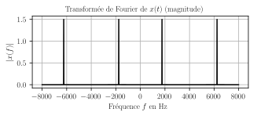
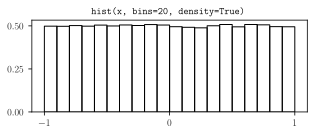

S1916 - Analyse et Compression du Signal Audionumérique - Examen Corrigé
By Sébastien Boisgérault, Mines ParisTech, CC BY-NC-SA 4.0
15 mars 2018
Contents
Modalités
Durée: 1h30.
Autorisés:
tous documents (sous forme papier ou électronique),
calculette, tablette, ordinateur portable, etc.
Interdit:
- toute forme de communication: échanges avec le voisin, utilisation d’Internet, du téléphone, etc.
Questions
Voix + Texte
On souhaite adjoindre à un flux de voix parlée – utilisant la technologie appropriée de compression – la transcription textuelle du message. De quel pourcentage est-ce que l’on augmente le débit de données ?
On ne cherche ici qu’un ordre de grandeur (0.1% ? 1% ? 10% ? 100% ?); on pourra supposer un débit de 200 mots/min et une longueur moyenne 6 lettres par mot.
Réponse
On peut prendre 10 kbits/s comme débit de référence pour la voix parlée (soit ~1% du débit de données d’un CD audio; le débit associé au standard GSM est 9.6 kbits/s par exemple). Si un locuteur prononce 200 mots par minute et que chaque mot fait 6 lettres, en négligeant l’information associée aux espaces, punctuations, etc. et en supposant que chaque lettre est décrite par un caractère ASCII, le débit associé est \[ \frac{200 \times 6 \times 8}{60} = 160 \, \mathrm{bits/s} \] Soit de l’ordre de 1% du débit de la voix. Bien sûr, ces nouvelles données pourraient elle-mêmes être soumises à une compression (sans perte) si nécessaire. Différents auteurs (dont Shannon) ont estimé l’entropie associée à une lettre de la langue anglaise et obtiennent des résultats autour de 1 ou 2 bits, à comparer avec les 8 bits utilisés pour un charactère ASCII. En étant optimiste (en tablant sur 1 bit), on pourrait donc réduire le flux de données textuelles à approximativement \[ \frac{160}{8} = 20 \, \mathrm{bits/s}. \] On est alors plus proche de 0.1% que de 1% du débit associé à la voix.Code Unaire
Une source d’information produit aléatoirement l’entier naturel \(n\) avec une probabilité \(P(N=n) = 2^{-n-1}\). Si l’on utilise un code unaire, quelle est la longueur moyenne (en bits) du code associé ?
Réponse
Le code unaire associé à l’entier \(n\) est \(n\) “1” suivi d’un “0”; la longueur \(|c(n)|\) du code associé à \(n\) est donc \(n+1\) bits. Par conséquent, la longueur moyenne du code de \(N\) est fournie par la formule:\[ \left< |c(N)| \right> = \sum_{n=0}^{+\infty} 2^{-n-1} \times (n+1) = \sum_{n=1}^{+\infty} n 2^{-n}. \] Il existe plusieurs techniques ancestrales pour calculer cette somme. Ma préférée: remarquer que si \(z=1/2\), la somme cherchée vaut \[ \sum_{n=0}^{+\infty} n z^n = S(z) \] (avec la convention que \(z^0 = 1\), ce qui permet de sommer à partir de 0 et non de 1). Puis, comme pour tout \(|z|<1\) on a \[ \frac{d}{dz} \left(\sum_{n=0}^{+\infty} z^n\right) = \sum_{n=0}^{+\infty} n z^{n-1} = \left(\sum_{n=0}^{+\infty} n z^{n}\right) / z, \] la valeur de \(S(z)\) est donnée par \[ S(z) = z \times \frac{d}{dz} \left(\frac{1}{1-z}\right) = \frac{z}{(1-z)^2}. \] On a donc \[ \left< |c(N)| \right> = S(1/2) = \frac{1/2}{(1-1/2)^2} = 2. \]
421
Le jeu de 421 se joue avec trois dés à 6 faces. Le tirage le plus fort est le “421” (un dé a produit “4”, un autre “2” et le dernier “1”). Quelle est la quantité d’information associée l’événement “tirer un 421” ? Quelle est la quantité d’information (moyenne) que l’on obtient en observant si l’on a tiré un 421 ou non ? Même questions pour le tirage le plus faible, le “221” (la “nénette”).
Réponse
Les trois dés utilisés sont tous distinguables (on peut supposer par exemple qu’il y en a un rouge, un bleu et un vert). Il y a donc 6 tirages possibles pour faire un “421”: le “4” peut apparaitre sur l’un quelconque des trois dés et dans chacun de ces cas, il y a deux façon d’allouer le “2” et le “1” aux deux dés restants. La probabilité associées est donc \(p = 6/ 6^3 = 1/6^2\) et l’information associée au tirage d’un “421” est \[ I = -\log_2 p \approx 5.17 \mbox{ bits}. \] L’entropie associé à l’observation “tirer un 421 ou non” est donnée par \[ H = -p \log_2 p -(1-p) \log_2 (1-p) \approx 0.183 \mbox{ bits}. \] La situation pour le “221” est similaire, sauf qu’il n’existe que 3 tirages possibles: une fois que le “1” a été affecté à un dé (trois possibilités), il n’y a plus aucun choix possible; donc \(p = 3/ 6^3\), et par conséquent \[ I \approx 6.17 \mbox{ bits} \; \mbox{ et } \; H \approx 0.106 \mbox{ bits}. \]Réverberation
On associe au signal digital \(u_n = u(t=n\Delta t)\) un signal \(y_n = y(t=n\Delta t)\) qui satisfait \[ \forall \, n \in \mathbb{Z}, \; y_{n+p} - g y_{n} = -g u_{n+p} + u_{n} \] où \(g > 0\) et \(p \in \mathbb{N}^*\).
Déterminer la fonction de transfert \(H(z)\) de ce filtre numérique. Pour quelles valeurs des paramètres \(g\) et \(p\) le filtre est-il stable ? Quand \(f>0\) et \(u(t) = \sin(2\pi f t)\), quelle est l’amplitude \(A\) du signal de sortie de la forme \(y(t) = A \sin (2\pi f t + \phi)\) ? Indication: on pourra calculer \(|H(z)|\) lorsque \(|z|=1\).
Réponse
Si l’on recherche un signal de sortie du filtre \(y_n = Y z^n\) qui corresponde à un signal d’entrée \(u_n = U z^n\), on obtient \[ Y z^{n+p} - g Y z^n = -g U z^{n+p} + U z^n \] et donc \(Y = H(z) U\) avec \[ H(z) = \frac{- g z^p+1}{z^p - g}. \] Les pôles \(z\) de cette fonction de transfert vérifient tous \(|z| = g^{1/p}\) par conséquent le filtre est stable si et seulement si \(g < 1\). On a \[ |H(z)|^2 = H(z) \overline{H(z}) = H(z) H(\bar{z}) \] et par conséquent dans le cas où \(|z|^2 = z \bar{z} = 1\), \[ |H(z)|^2 = \frac{- g z^p+1}{z^p - g} \times \frac{- g \bar{z}^p+1}{\bar{z}^p - g} = \frac{1 + g^2 - g(z^p +\bar{z}^p)}{1 + g^2 - g(z^p +\bar{z}^p)} = 1. \] Le signal d’entrée \(u(t) = e^{i2\pi f t}\) correspond à \(u_n = e^{i2\pi f\Delta t n} = z^n\) pour \(z = e^{i2\pi f\Delta t}\). La sortie exponentielle complexe correspondante est \[ y(t) = H(f) e^{i2\pi ft} \; \mbox{ avec } \; H(f) = H(z = e^{i2\pi f\Delta t}). \] De façon similaire, au signal d’entrée \(u(t) = e^{- i2\pi f t} = e^{i2\pi (-f) t}\) correspond la sortie \(y(t) = H(-f) e^{-i2\pi ft} = \overline{H(f)}e^{-i2\pi ft}\) et par conséquent – le filtre étant linéaire – si \(H(f) = A e^{i\phi}\), avec \(A\geq 0\) et \(\phi \in \mathbb{R}\), au signal \[ u(t) = \sin 2\pi f t = \frac{e^{i2\pi ft} - e^{-i2\pi ft}}{2i} \] correspond \[ y(t) = \frac{Ae^{i\phi}e^{i2\pi ft} - A e^{-i\phi}e^{-i2\pi ft}}{2i} = A \sin (2\pi f t + \phi). \] Or rappelons-nous que \[ A = |H(f)| = |H(z = e^{i2\pi f\Delta t})| \; \mbox{ et } |e^{i2\pi f\Delta t}| = 1. \] Par conséquent, \(A=1\).Inaudible
Le signal audio \(x(t) \in [-1.0,1.0]\) est la superposition de deux tons purs de fréquences \(f_0=1000 \, \mathrm{Hz}\) et \(f\) inconnue: \[ x(t) = 0.1 \times \sin(2\pi f_0 t) + 0.0002 \times \sin(2 \pi f t) \] Lorsque ce son est joué avec l’amplification standard, la composante associée au ton pur de fréquence \(f\) n’est pas audible. Quelles sont (approximativement) les plages de valeurs possibles de \(f\) ?
Réponses
Deux phénomènes peuvent expliquer que le ton pur de fréquence \(f\) ne soit pas audible. Le premier est lié au seuil d’audition absolu. Le niveau sonore en dB du ton \[ L = 10 \log_{10} \left<(0.0002 \times \sin(2 \pi f t))^2 \right> + 96, \] soit puisque la valeur moyenne du sinus \(\left< \sin^2(2 \pi f t)\right>\) vaut 1/2, \[ L = 10 \log_{10} 2 \times 10^{-8} + 96 \approx 19 \, \mathrm{dB}. \] En se reportant au graphe du seuil d’audition absolu, on constate qu’avec ce niveau sonore, le ton pur ne sera pas audible si la fréquence \(f\) est inférieure à 100 Hz ou supérieure à 10000 Hz (approximativement).Le second phénomène est un masquage possible par le ton pur de fréquence \(f_0\). Si l’on utilise le modèle de Fletcher, le masquage a bien lieu si \(f\) se situe dans la bande critique de largeur \(\Delta(f_0)\) centrée sur \(f_0\). On a \[\Delta(1000) \approx \max(100, 0.2 \times 1000) = 200\, \mathrm{Hz},\] donc si \(f_0\) est entre 900 et 1100 Hz, le ton ne sera pas non plus audible.
De 8 kHz à 16 kHz
>>> from numpy import *
>>> df = 8000; dt = 1.0 / df; T = 3.0; f = 440.0 * 2**2
>>> t = r_[0.0:T:dt]; n = len(t)
>>> x = sin(2*pi*f*t)
>>> y = zeros(2*n); y[::2] = x
>>> import audio.wave
>>> audio.wave.write(y, "y.wav", df=2*df)Qu’est-ce que l’on entend lorsque l’on joue le fichier y.wav?
Réponse
La transformée de Fourier de \(x(t)\) présente un unique pic étroit – à la fréquence \(f = 1760\) Hz – dans la bande de fréquences 0–4000 Hz; c’est la bande pertinente puisque le signal est échantillonné à 8000 Hz. Par symmétrie (puisque le signal \(x(t)\) est à valeurs réelles) et périodicité, les pics apparaissent également à \(f = -1760\) Hz, \(f = -1760+ 8000 = 6240\) Hz, etc.
La transformé de Fourier du signal \(y(t)\) est donnée par \(y(f) = x(f)/2\). Comme nous avons doublé la fréquence d’échantillonnage du signal, la bande de fréquence significative est désormais 0–8000 Hz et deux pics y apparaissent désormais: 1760 Hz et 6240 Hz. C’est cette combinaison de deux tons purs que l’on entend en jouant le fichier y.wav.
Quantification
>>> from numpy import *
>>> x = 2.0 * random.random(size=100000) - 1.0
>>> S2 = mean(x * x)Quelle est la valeur théorique de S2 ?
>>> from audio.quantizers import Uniform
>>> uniform = Uniform(low=-1.0, high=1.0, N=2**8)
>>> y = uniform(x)
>>> n = y - x
>>> N2 = mean(n * n)Quelle est la valeur théorique de N2 ?
>>> SNR = 10 * log10(S2 / N2)Quelle est la valeur théorique de SNR ? Combien de bits supplémentaires faudrait-il que le quantificateur uniforme alloue par échantillon pour assurer un rapport signal sur bruit SNR supérieur à 50 dB ?
Réponse
La variable aléatoire \(X\) est de densité uniforme \(p(x) = 0.5\) entre \(-1\) et \(1\), donc \[ \left<X^2\right> = \int_{-1}^1 p(x) x^2 dx = \frac{1}{2} \left[ \frac{x^3}{3}\right]_{-1}^1 = \frac{1}{3}. \] Le pas \(\Delta\) d’un quantificateur uniforme de \([-1, 1]\) utilisant 8 bits est \(\Delta = 2/ 2^8 = 2^{-7}\), par conséquent dans le cadre d’une hypothèse de haute résolution, la puissance du bruit \(N = [X] - X\) est donnée par \[ \left< N^2\right> = \frac{1}{12} \Delta^2 = \frac{2^{-16}}{3} \approx 5.09 \times 10^{-6}. \] Le rapport signal sur bruit associé vaut donc \[ \mathrm{SNR} = 10 \log_{10} 2^{16} \approx 48.2 \, \mathrm{dB}. \] Chaque nouveau bit améliorant le rapport signal sur bruit de 6 dB, un seul bit supplémentaire suffit à atteindre l’object de 50 dB.Prédiction Linéaire
On considère la suite finie de valeurs: \[ x_0 = -1, \; x_1 = 1 \]
Déterminer le coefficient \(a_1\) de la prédiction linéaire à l’ordre \(m=1\) des \(x_n\) par les méthodes de covariance, puis d’autocorrélation.
Déterminer les coefficients \(a_1\) et \(a_2\) de la prédiction linéaire des \(x_n\) à l’ordre \(m=2\) par la méthode d’autocorrélation ainsi que les prédictions \(\hat{x}_n\) et les résidus \(x_n - \hat{x}_n\) associés.
Réponse
Par la méthode de covariance à l’ordre \(1\), on cherche à minimiser le critère \[ j(a_1) = (x_1 - a_1 x_0)^2 = (1 + a_1)^2 \] ce qui est réalisé par le choix de \(a_1 = -1\). Avec la méthode d’autocorrélation à l’ordre \(1\), le critère à minimiser devient (en posant \(x_{-1} = x_2 = 0\)): \[ \begin{split} j(a_1) &= (x_0 - a_1 x_{-1})^2 + (x_1 - a_1 x_0)^2 + (x_2 - a_1 x_1)^2 \\ &= (-1)^2 + (1 + a_1)^2 + (- a_1)^2 \\ &= 2(1 + a_1 + a_1^2) \end{split} \] La valeur optimale de \(a_1\), déterminée par \[ \frac{d j(a_1)}{d a_1} = 2 + 4 a_1 = 0, \] est donc \(a=-1/2\).A l’ordre \(2\), puisque le signal n’est que de longueur 2, seule la méthode d’autocorrélation est applicable. On cherche alors à minimiser \[
\begin{split}
j(a_1,a_2) = & \; (x_0 - a_1 x_{-1} - a_2 x_{-2})^2
+ (x_1 - a_1 x_0 - a_2 x_{-1})^2 + \\
& \; (x_2 - a_1 x_1 - a_2 x_0)^2 +
(x_3 - a_1 x_2 - a_2 x_1)^2 \\
= & \; (-1)^2 + (1 + a_1)^2 + (- a_1 + a_2)^2 + (-a_2)^2\\
= & \; 2 + 2 a_1 + 2a_1^2 + 2 a_2^2 - 2 a_1 a_2.
\end{split}
\]
Le minimum est obtenu en annulant les dérivées partielles \[
\frac{\partial j(a_1,a_2)}{\partial a_1}
=
2 + 4 a_1 - 2 a_2 = 0
\; \mbox{ et } \;
\frac{\partial j(a_1,a_2)}{\partial a_2}
=
4 a_2 - 2 a_1 =0.
\] La seconde équation fournit \(a_1 = 2 a_2\), puis la première \(a_2 = -1/3\). On a donc finalement \(a_1 = -2/3\) et \(a_2 = -1/3\). Les prédictions associées sont donc \(\hat{x}_0 = 0\), puis \(\hat{x}_1 = (-2/3) \times (-1) = 2/3\), \(\hat{x}_2 = (-2/3) \times 1 + (-1/3) \times (-1)= -1/3\), \(\hat{x}_3 = (-1/3) \times 1 = -1/3\), puis des zéros. Les résidus \(e_n = x_n - \hat{x}_n\) sont donc \(e_0 = -1\), \(e_1 = 1/3\), \(e_2 = 1/3\), \(e_3 = 1/3\), puis des zéros.